晶体二极管是一种非线性元件，亦即检波电流J同场强正之间不是线性关系，在一定范围内，大致有如下关系
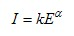 （5）
其中：k,α是和晶体二极管工作状态有关的参量。当微波场强较大时呈现直线律，当微波场强较小时(P<lμW)呈现平方律。因此，当微波功率变化较大时α和k就不是常数，且和外界条件有关，所以在精密测量中必须对晶体检波器进行校准。
校准方法：将测量线终端短路，这时沿线各点驻波的振幅与到终端的距离
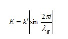⑹
上述关系中的
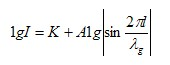 ⑺
实验一：微波测试系统的调试与晶体检波器的校准
一、实验目的与要求
1.了解微波测试系统；
2.熟悉测量线的使用方法；
3.掌握校准晶体检波器特性的方法。
二、实验类型
验证型
三、实验原理及说明
测量线由开槽波导、不调谐探头和滑架组成。开槽波导中的场由不调谐探头取样，探头的移动靠滑架上的传动装置，探头的输出送到显示装置，就可以显示沿波导轴线的电磁场变化信息。测量线外形如图:
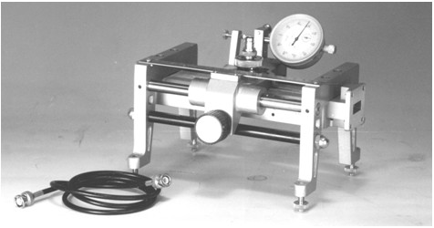
图: DH364A00型3cm测量线外形
测量线波导是一段精密加工的开槽直波导,此槽位于波导宽边的正中央，平行于波导轴线，不切割高频电流，因此对波导内的电磁场分布影响很小，此外，槽端还有阶梯匹配段，两端法兰具有尺寸精确的定位和连接孔，从而保证开槽波导有很低的剩余驻波系数。
不调谐探头由检波二极管、吸收环、盘形电阻、弹簧、接头和外壳组成，安放在滑架的探头插孔中。不调谐探头的输出为ＢＮＣ接头，检波二极管经过加工改造的同轴检波管，其内导体作为探针伸入到开槽波导中，因此，探针与检波晶体之间的长度最短，从而可以不经调谐，而达到电抗小、效率高，输出响应平坦。
滑架是用来安装开槽波导和不调谐探头的，其结构见图。把不调谐探头放入滑架的探头插孔⑹中，拧紧锁紧螺钉⑽，即可把不调谐探头固紧。探针插入波导中的深度，用户可根据情况适当调整。 出厂时，探针插入波导中的深度为1.5mm ，约为波导窄边尺寸的15％。
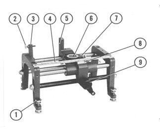 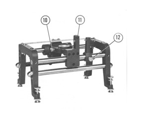
图 驻波测量线结构外形图
⑴水平调整螺钉 用于调整测量线高度
⑵百分表止挡螺钉 细调百分表读数的起始点
⑶可移止挡 粗调百分表读数
⑷刻度尺 指示探针位置
⑸百分表插孔 插百分表用
⑹探头插孔 装不调谐探头
⑺探头座 可沿开槽线移动
⑻游标 与刻度尺配合，提高探针位置读数分辨率
⑼手柄 旋转手柄，可使探头座沿开槽线移动
⑽探头座锁紧螺钉 将不调谐探头固定于探头插孔中
⑾夹紧螺钉 安装夹紧百分表用
⑿止挡固定螺钉 将可移止挡⑶固定在所要求的位置上
⒀定位垫圈（图中未示出）用来控制探针插入波导中的深度。
在分析驻波测量线时，为了方便起见通常把探针等效成一导纳Yu与传输线并联。如
图10所示。其中Gu为探针等效电导，反映探针吸取功率的大小，Bu为探针等效电纳，表示探针在波导中产生反射的影响。当终端接任意阻抗时，由于Gu的分流作用，驻波腹点的电场强度要比真实值小，而Bu的存在将使驻波腹点和节点的位置发生偏移。当测量线终端短路时，如果探针放在驻波的波节点B上，由于此点处的输入导纳yin→∞故Yu的影响很小，驻波节点的位置不会发生偏移。如果探针放在驻波的波腹点，由于此点上的输入导纳yin→0,故Yu对驻波腹点的影响就特别明显，探针呈容性电纳时将使驻波腹点向负载方向偏移。如图所示。所以探针引入的不均匀性，将导致场的图形畸变，使测得的驻波波腹值下降而波节点略有增高，造成测量误差。欲使探针导纳影响变小，探针愈浅愈好，但这时在探针上的感应电动势也变小了。通常我们选用的原则是在指示仪表上有足够指示下，尽量减小探针深度，一般采用的深度应小于波导高度的10％～15％。
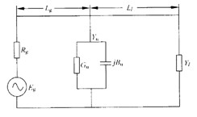
图探针电纳对驻波分布图形的影响
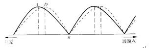
图探针等效电路
微波频率很高，通常用检波晶体(微波二极管)将微波信号转换成直流信号来检测的。
晶体二极管是一种非线性元件，亦即检波电流J同场强正之间不是线性关系，在一定范围内，大致有如下关系
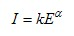 （5）
其中：k,α是和晶体二极管工作状态有关的参量。当微波场强较大时呈现直线律，当微波场强较小时(P<lμW)呈现平方律。因此，当微波功率变化较大时α和k就不是常数，且和外界条件有关，所以在精密测量中必须对晶体检波器进行校准。
校准方法：将测量线终端短路，这时沿线各点驻波的振幅与到终端的距离 的关系应当为
的关系应当为
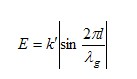⑹
上述关系中的 也可以以任意一个驻波节点为参考点。将上两式联立，并取对数得到
也可以以任意一个驻波节点为参考点。将上两式联立，并取对数得到
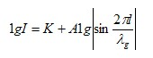 ⑺
四、实验仪器
序 号 |
名 称 |
主要用途 |
1 |
测量线 |
测量数据 |
2 |
调配元件 |
系统调配 |
3 |
3厘米波微波系统 |
组成系统 |
4 |
待测元件 |
系统待测 |
5 |
辅助器件（如短路器、匹配负载等） |
辅助实验 |
6 |
选频放大器 |
辅助实验 |
五、实验内容和步骤
1.按测试装置图，连接各微波元件。
2.调整测量线
（1）测量线终端接晶体检波器，调整微波信号源，使获得最大输出功率。
（2）用频率计测量工作频率，记录数据，随即失谐频率计。
（3）调整测量线。测量线终端接匹配负载，调整探针插入深度约1～1.5mm，并将探头晶体检波输出端接指示器。然后移动探针至测量线中间部位，调节探头活塞，使电表偏移最大，如果发现探针可调谐在几个峰值上时，应选取峰值最大位置，此时测量线处于最佳工作状态。
3.测量波导波长
测量线终端接短路板，移动探针至波节点，用交叉读数法测量三个相邻波节点的位
置，列出相应表格，记录数据d11、d12、d21、d22、d31 、d32? ，并计算波导波长
4.校准晶体二极管检波特性
分别计算各测量点与波节点的距离d 。选取前面测得的波节点d0，分别计算测量点的实际位置d0+d，将数据记录。
测量线终端接短路板，调整微波衰减器，使探针位于波腹点时指示电表读数为满刻度100% 。探针自波节点开始移动，分别读取d0+d各位置，对应的指示电表读数，并将数据记录。
六、实验数据处理与分析
根据上面测得的数据在坐标纸上以EI为横坐标，I为纵坐标，描绘I－EI晶体定标曲线。
七、注意事项
1．测量波导波长或其它参量时，测量线探针位置及短路活塞位置必须朝同一个方向移动，以免引起回差。
2．用交叉－读数法测得纯驻波波节点时，微波衰减器衰减量须置于最小值，提高指示器灵敏度。但在移动测量线时必须同时加大衰减量或降低指示器灵敏度，以防止晶体烧毁或指示电载过载而损坏。
3．当微波信号源工作频率改变时，测量线必须重新调整。